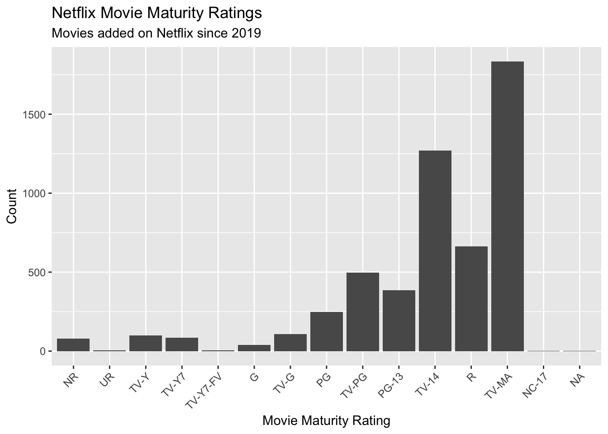
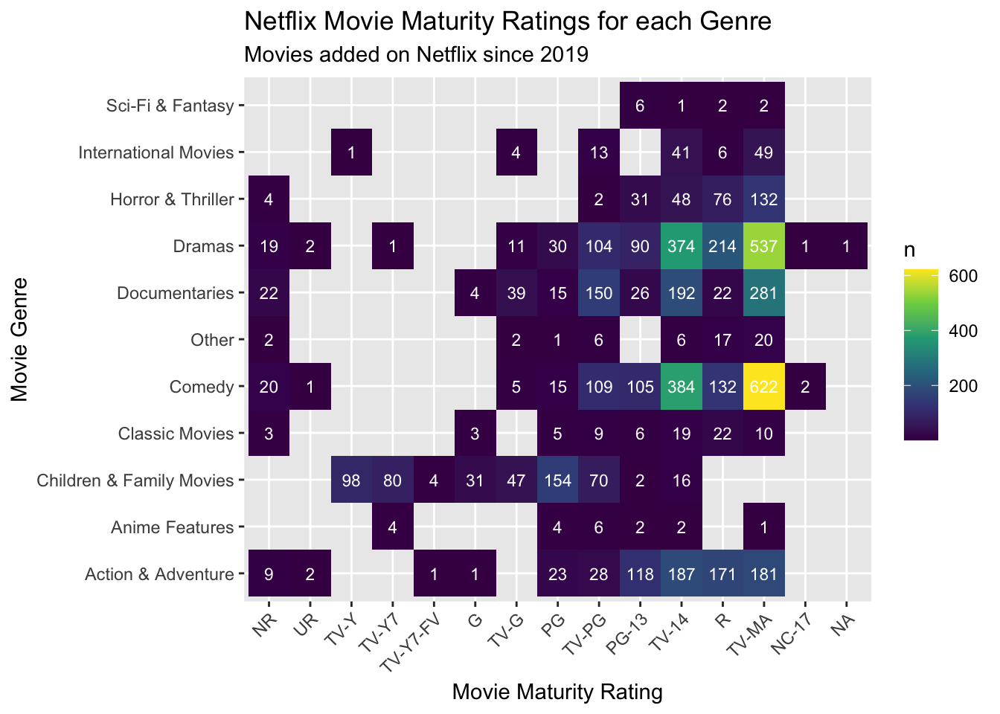

Code
library(tidyverse)
library(openintro)DS002 Project 2
A practice project to understand and experiment str() and fct() functions and various data visualizations in R using a Netflix movie and TV show dataset from Tidy Tuesday.
library(tidyverse)
library(openintro)This Netflix data is from the Tidy Tuesday on 2021-04-20, obtained from Kaggle with credit to Shivam Bansal. The dataset was collected from Flixable, a third-party Netflix search engine. Data includes TV shows and movies added onto Netflix from 2019 onwards (although actual movie release year dates back to 1925), inclduing information such as show title, director, cast, country, release year, and rating.
Credits for data source: Github Link
Checking the first few rows of the Netflix data set below:
# Read in data from Tidy Tuesday
netflix_titles <- readr::read_csv('https://raw.githubusercontent.com/rfordatascience/tidytuesday/main/data/2021/2021-04-20/netflix_titles.csv')
#Check first few rows
head(netflix_titles)# A tibble: 6 × 12
show_id type title director cast country date_added release_year rating
<chr> <chr> <chr> <chr> <chr> <chr> <chr> <dbl> <chr>
1 s1 TV Show 3% <NA> João… Brazil August 14… 2020 TV-MA
2 s2 Movie 7:19 Jorge Mich… Demi… Mexico December … 2016 TV-MA
3 s3 Movie 23:59 Gilbert Ch… Tedd… Singap… December … 2011 R
4 s4 Movie 9 Shane Acker Elij… United… November … 2009 PG-13
5 s5 Movie 21 Robert Luk… Jim … United… January 1… 2008 PG-13
6 s6 TV Show 46 Serdar Akar Erda… Turkey July 1, 2… 2016 TV-MA
# ℹ 3 more variables: duration <chr>, listed_in <chr>, description <chr>Given the information available on the Netflix data set, here are some questions of interest that we can explore:
Code to clean the data
# Clean data to create new string variable that shows movie/ tv show genre
table(netflix_titles$rating)
G NC-17 NR PG PG-13 R TV-14 TV-G
39 3 84 247 386 665 1931 194
TV-MA TV-PG TV-Y TV-Y7 TV-Y7-FV UR
2863 806 280 271 6 5 netflix_titles <- netflix_titles |>
mutate(rating = fct_relevel(rating, c("NR", "UR", "TV-Y", "TV-Y7", "TV-Y7-FV", "G", "TV-G", "PG", "TV-PG", "PG-13", "TV-14", "R", "TV-MA", "NC-17")))
#NR = not rated
#UR = unrated
#TV-Y7-FV = a sub category of TV-Y7
netflix_titles <- netflix_titles |>
mutate(genre = str_extract(listed_in,"^[^,]+"))|>
mutate(genre2 = str_extract(listed_in,"(?<=, )[^,]+"))|>
mutate(genre3 = str_match(listed_in,"^[^,]+, [^,]+, ([^,]+)")[, 2])# Create two separate data frames for movies only, because I want to analyse it separately
netflix_movies <- netflix_titles |>
filter(type == "Movie")|>
mutate(duration = as.integer(str_remove(duration," min$")))#Create a dataframe for only netflix movies
netflix_movies <- netflix_titles |>
filter(type == "Movie")|>
mutate(duration = as.integer(str_remove(duration," min$")))
#table(netflix_movies$genre)
#Group a few genres together that are more niche
netflix_movies <- netflix_movies |>
mutate(genre_summary=fct_collapse(genre,
"Horror & Thriller"= c("Horror Movies", "Thrillers"),
Comedy= c("Stand-Up Comedy", "Comedies"),
Other= c("LGBTQ Movies","Sports Movies","Music & Musicals","Romantic Movies","Independent Movies","Cult Movies"),
"NA" = "Movies")) |>
filter(genre_summary != "NA")
#Relevel factor by count
netflix_titles <- netflix_titles |>
mutate(rating = fct_relevel(rating, c("NR", "UR", "TV-Y", "TV-Y7", "TV-Y7-FV", "G", "TV-G", "PG", "TV-PG", "PG-13", "TV-14", "R", "TV-MA", "NC-17")))
#table(netflix_movies$genre_summary)#Create bar chart showing what movie genres are common
netflix_movies|>
mutate(genre_summary = fct_infreq(genre_summary))|>
ggplot(aes(x = genre_summary)) +
geom_bar() +
labs(
x = "Movie Genre",
y = "Count",
title = "Netflix Movie Genres",
subtitle = "Movies added on Netflix since 2019"
) +
theme(axis.text.x = element_text(angle = 45, hjust = 1))
The bar graph above illustrates the most common types of movie genres represented on Netflix since 2019. Comedy, which includes both comedy shows and stand-up comedy, and dramas seem to be the most common, exceeding a count of 1500 movies for each category. Outside of the (understandable) popularity of Netflix comedy movies online and on social media being a justification for this high count, it is also possible that other sub-genres of comedy, such as romantic comedy (eg. “The Kissing Booth”), satire, and dark/ black comedy (eg. “Don’t Look Up”) are also included in the broad genre. Documentaries and Action & Adventure are the second most popular genres, followed by Children & Family movies.
A few caveats to the visualization is that each movie had multiple genre categories (up to 3) they belonged to and only the first identified genre was used to classify the movie. Also, less common genres, including LGBTQ Movies, Sports Movies, Music & Musicals, Romantic Movies, Independent Movies, and Cult Movies were grouped into “Other,” which means that the number of movies in each of these individual niches could be a much smaller number.
#Create bar chart showing what maturity ratings are common
netflix_movies|>
ggplot(aes(x = rating)) +
geom_bar() +
labs(
x = "Movie Maturity Rating",
y = "Count",
title = "Netflix Movie Maturity Ratings",
subtitle = "Movies added on Netflix since 2019"
) +
theme(axis.text.x = element_text(angle = 45, hjust = 1))
The bar chart above displays the matury ratings of movies on Netflix (specifically movies added onto Netflix from 2019 onwards). NR is “Not Rated” and UR is “Unrated,” but other than those two categories the rest of the ratings are displayed from the lowest (for youngest children) to the highest (for older teens and adults only). Refer to github source for more information on each maturity rating.
It is clear from the bar chart that there is a larger number of movies that have a more mature rating that requires parental guidance or are for adults only, with Mature Audience Only (TV-MA) being the most popular. However, from this visualization it is impossible to see which specific types of movies are often categorized into a certain maturity rating.
#Create heatmap showing what maturity ratings are common for what genre
netflix_movies |>
count(genre_summary, rating) |>
ggplot(aes(x = rating, y = genre_summary, fill = n)) +
geom_tile() +
geom_text(aes(label = n), color = "white", size = 3) +
labs(
x = "Movie Maturity Rating",
y = "Movie Genre",
title = "Netflix Movie Maturity Ratings for each Genre",
subtitle = "Movies added on Netflix since 2019"
) +
scale_fill_viridis_c() +
theme(axis.text.x = element_text(angle = 45, hjust = 1))
While the previous bar graph did not provide any information about the relationship between maturity rating and movie genre, this heatmap shows how many of each movie genre is categorized as a specific rating.
From the heatmap colors, the variable that stands out the most is Comedy, with 622 comedy movies being rated “Mature Audience Only” and 384 movies as “Parents Strongly Cautioned.” This makes sense because comedy can often be more vulgular and involve inappropriate or mature jokes. Dramas also have 537 movies that are TV-MA, followed by 374 rated TV-14 and 214 as R-rated. Again, given the often sensitive, mature, and possibly sexual topics that drama movies have, this distribution of rating makes sense.
What interested me is that 281 documentaries are rated TV-MA. Because I don’t watch documentaries, it makes me wonder what topics result in a mature rating for these movies because documentaries often remind me of nature shows, food documentaries, and travel documentaries.
# Tidy release year variable
#netflix_movies <- netflix_movies |>
#mutate(release_year = as.integer(release_year))|>
#mutate(year_group = )# Distribution of movie running times given release year
#netflix_movies|>
#ggplot(aes(y = duration)) +
#geom_boxplot() +
#labs(
#y = "Movie running time",
#title = "Netflix Movie Running Times",
#subtitle = "Movies added on Netflix since 2019"
#) +
#facet_wrap(~genre_summary)
#use date variable
#extract year
#change running time to numeric